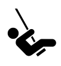
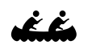
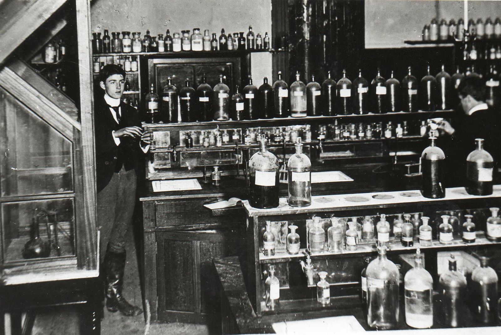

Newcomer
Motivation
This pattern can help project participants be aware of the issues faced by newcomers, and cultivate a “beginner’s mind” themselves.
Context
When there’s learning happening, it’s because there is someone who is new to a topic, or to something about the topic.
Forces
 Individuation: each person learning optimally is what’s best for the community.
 Mutuality: our individuality does not isolate us from one another, but draws us together.
Problem
Newcomers can feel overwhelmed by the amount of things to learn. They often don’t know where to start. They may have a bunch of ideas that the old-timers have never considered – or they may think they have new ideas, which are actually a different take on an old idea; see Reduce, reuse, recycle. People who are new to the project can tell you what makes their participation difficult. Since you’re learning as you go as well, you can ask yourself the same question: what aspects of this encounter are difficult for me?
Solution
Instead of thinking of newcomers as “them”, and trying to provide solutions, we focus on newcomers as “us” – which makes the search for solutions that much more urgent. We permit ourselves to ask naive questions. We entertain vague ideas. We add concreteness by trying A specific project. We may then genuinely turn to others for help. We aim to foster a culture in which the focus for everyone is on addressing our own learning challenges rather than on “providing” solutions for others [1]. When you begin a new project, try to systematically take notes and gather data to analyze and reflect upon later; leave artifacts for other future newcomers to use and build upon in their own research. In practice this may be a lot to ask for someone just joining a group, but over time we may have many ways to structure our collective engagement so that it leads to research cycles based on the “action research” steps reflect, plan, act, and observe. Note that there is a parallel with the four facets assess, convene, organize, cooperate from Figure [fig:connections]. The history of the action research approach, with particular emphasis on educational applications, is surveyed in [5]. One method for doing the reflection/assessment step is presented in the Scrapbook pattern. Be flexible: networked attention (even more so than rigid cycles [3]) leads to new ways of knowing and expanded access to knowledge-production [7,8].
Rationale
A newcomer’s confusion about how best to get involved or what the point of all this actually is may be due to a lack of structure in the project Roadmap. Sharing vulnerability and confusion gives us a chance to learn. Also potential for lack of confidence to impact on newcomers willingness to contribute.
Resolution
An awareness of the difficulties that newcomers face can help us be more compassionate to ourselves and others. We strengthen the community by supporting all participants’ individuation. We have a better chance of making the project useful for others if we’re clear about how it is useful to us. By welcoming newcomers, we enhance the sense of mutuality with people who have never encountered the project before, and learn together with them. The facts start to become useful when we understand how people perceive them [4].
Example 1
Wikipedia Newcomers can make use of resources that include a “Teahouse” where questions are welcomed, a platform extension that changes the user interface for new editors, and lots of documentation.1,2,3 exceptional newcomers may be given special recognition.4 interest to the Wikimedia Foundation.5 However, “Nearly all editors begin with a burst of activity, then quickly tail off” [6]. The degree to which those editors who are retained strive to maintain a “beginner’s mind” is less clear. As regards learning their way around the community, there is quantitative support [6] for the claim that “novice users learn the rules and conventions for contributing both through observation and direct coaching from more knowledgeable others” [2].

Science Hall: Aspatria Agricultural College, Aspatria, Cumberland, UK
Example 2
It will often be pragmatic to connect Newcomers with employment directly, so that the future university may see a closer coupling of science and industry than would be found in the old Science Hall. Inspiration can be drawn the London-based freelancing cooperative Founders&Coders, which is able to offer intensive training in web development at no cost to successful applicants, on the basis that some trainees will choose to join the cooperative as paying members later on.6
What’s Next in the Peeragogy Project
More detailed guides can show Newcomers how they can contribute and what to expect when they do. We should have different guides for different “user stories”. We can start by listing some of the things we’re currently learning about.
References
-
D. Boud and A. Lee. 2005. “Peer learning” as pedagogic discourse for research education. Studies in Higher Education 30, 5: 501–516.
-
Susan L Bryant, Andrea Forte, and Amy Bruckman. 2005. Becoming Wikipedian: Transformation of participation in a collaborative online encyclopedia. Proceedings of the 2005 international aCM sIGGROUP conference on supporting group work, ACM, 1–10.
-
Y. Engeström. 1999. Innovative learning in work teams: Analyzing cycles of knowledge creation in practice. In Perspectives on activity theory, Yrjö Engeström, Reijo Miettinen and Raija-Leena Punamäki (eds.). Cambridge University Press, 377–406.
-
Paulo Freire. 1982. Creating alternative research methods: Learning to do it by doing it. In Creating knowledge: A monopoly, B. Hall, A. Gillette and R. Tandon (eds.). Society for Participatory Research in Asia, 29–37.
-
Jean McNiff. 2013. Action research: Principles and practice. Routledge.
-
Katherine Panciera, Aaron Halfaker, and Loren Terveen. 2009. Wikipedians are born, not made: A study of power editors on Wikipedia. Proceedings of the aCM 2009 international conference on supporting group work, ACM, 51–60.
-
Gilbert Simondon. 2012. Technical mentality. In Gilbert Simondon: Being and technology, Arne De Boever, Alex Murray, Jon Roffe and Ashley Woodward (eds.). Oxford University Press, 1–15.
-
C.S. Wagner. 2008. The new invisible college: Science for development. Brookings Inst Press.